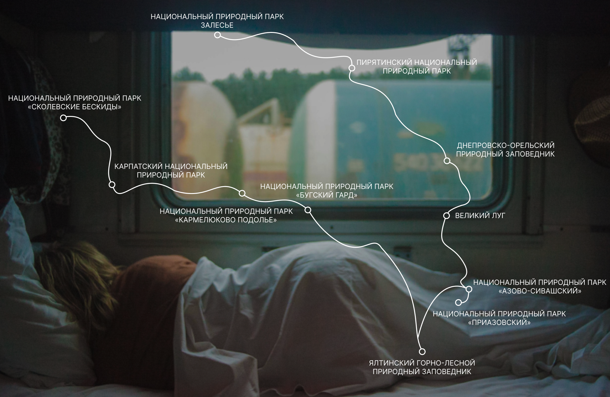

-
Озеро Синевир – найбільше в Україні гірське озеро. Хоча це, безумовно, родзинка парку, але відвідати його варто не лише заради цієї водойми. Тут є і чарівні гори, і кришталево чисті водоспади, річки та озера, заповідні болота і праліси, що належать до Списку всесвітньої спадщини ЮНЕСКО.
-
Тут відкриті для відвідувачів унікальні для України реабілітаційні центри для бурих ведмедів та хижих птахів. У дикій природі, крім тих же ведмедів, можна зустріти вовка, рись, оленів та козуль. У смерекових лісах гніздяться глухарі, рябчики, на торф’яні болота залітають білі та чорні лелеки, а високо в небесах ширяють беркути.
-
А ще приїжджайте до “Синевиру” знайомитись із душею Карпат – місцевою культурою. Побачите знаряддя праці сплавників деревини у єдиному в Європі та другому у світі Музеї лісу і сплаву, ознайомитеся із побутом та традиціями трьохсотлітньої давнини в музеї “Старе село” та оглянете оборонні бункери Лінії Арпада, яку використовувала угорська армія в Другій світовій війні.
Подорож по Україні
Природа ближче ніж ти вважаєш
Що таке Українська природа?
8633 території та об’єкти природно-заповідного фонду загальною площею 4,1 млн. га, що становило 6,8 % площі країни, а також морський заказник "Філофорне поле Зернова " площею 402,5 тис. га, а у складі природно-заповідного фонду було 5 біосферних заповідників, 19 природних заповідників, 53 національних природних парки, 85 регіональних ландшафтних парків, 3398 заказників, 3580 пам‘яток природи, 802 заповідних урочища, 28 ботсадів, 13 зоопарків, 62 дендропарки та 588 парків-пам‘яток садово-паркового мистецтва.
Текст
Текст